search
language
Experience diverse landscapes, rich cultures, and unforgettable wildlife encounter
Embark on an extraordinary 10-day journey through Kenya's most iconic wildlife destinations, from the rugged beauty of Samburu to the rhino sanctuary of Ol Pejeta, the flamingo-filled shores of Lake Nakuru, the legendary Masai Mara, and the Kilimanjaro-framed plains of Amboseli. This carefully curated safari offers an immersive experience across Kenya's most diverse ecosystems, creating unforgettable memories at every turn.
Experience the breathtaking contrast of landscapes as you witness the "Special Five" in Samburu's northern frontier, encounter rare rhinos in Ol Pejeta, marvel at the pink flocks of Lake Nakuru, immerse yourself in the predator-rich plains of the Masai Mara, and capture elephants against Mount Kilimanjaro's majestic backdrop in Amboseli. Each destination offers unique wildlife encounters and photographic opportunities.
Our expert guides will share their deep knowledge of each ecosystem and wildlife behaviors, ensuring you gain profound insights into Kenya's natural wonders. With comfortable accommodations ranging from cozy lodges to ultra-luxury camps, you can focus entirely on the breathtaking safari experience across diverse landscapes.
This comprehensive journey is designed for those seeking the ultimate Kenyan safari experience, combining northern frontier adventures with classic southern destinations. Whether you're a first-time visitor or a seasoned safari enthusiast, this itinerary offers the perfect blend of wildlife diversity, scenic beauty, and cultural immersion.
Distance/Time: ~320 km | 6–7 hrs
The morning unfolds with a warm safari briefing before you journey north, leaving behind the rolling farmlands and climbing into rugged country. The air grows warmer, the colors earthier red soil, blue hills, and the soft shimmer of mirages ahead. By afternoon, you enter Samburu National Reserve, a realm of raw beauty where elephants gather along the Ewaso Nyiro River and reticulated giraffes stride elegantly among acacias. As the golden hour settles, you embark on your first evening drive. The wilderness greets you in full the grace of the gerenuk, the flash of an oryx horn, and the stillness that only true wilderness can hold.
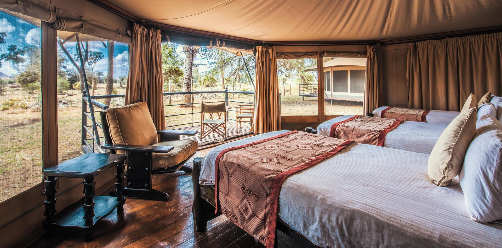
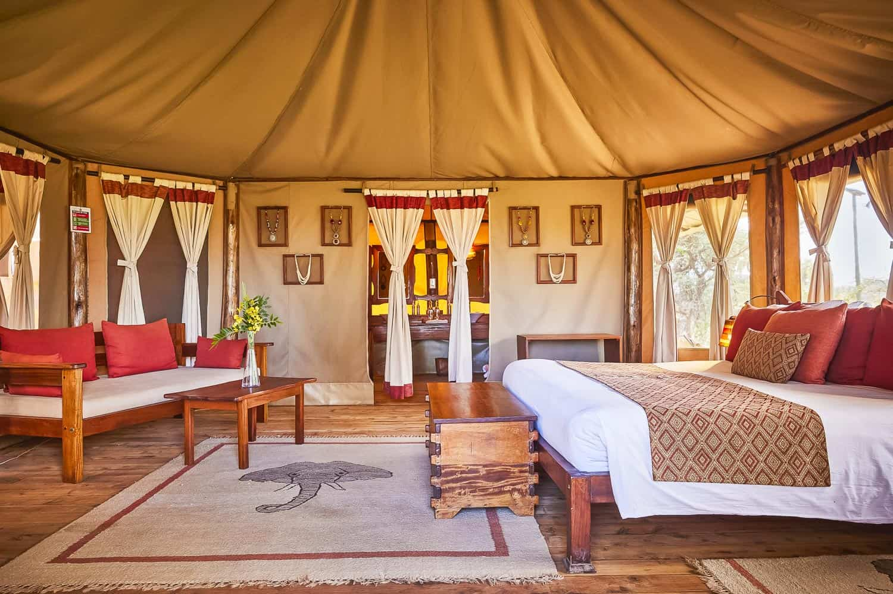
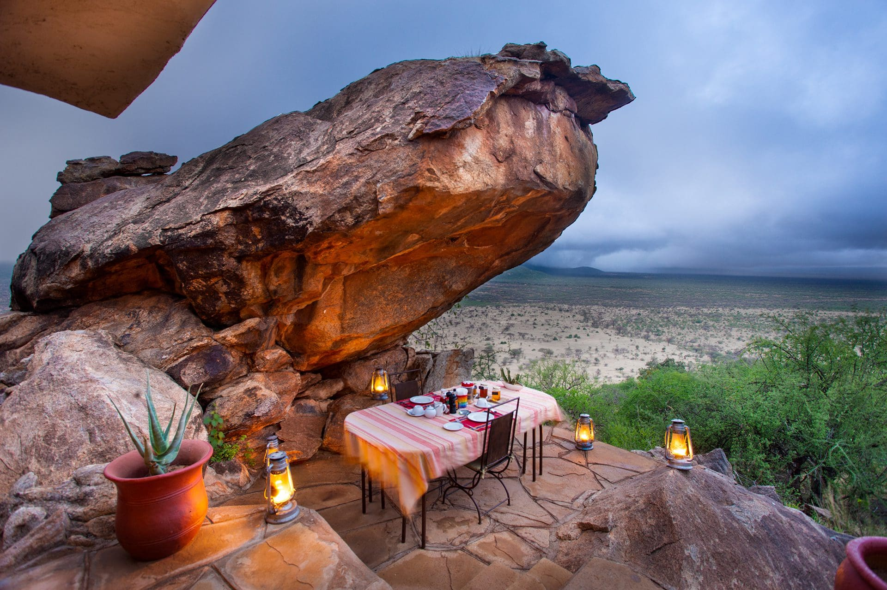
The dawn chorus begins early in Samburu a blend of laughing doves and distant elephants. Today is a full day to explore this magical reserve, where the landscape changes with every mile. Your morning drive may reveal a leopard draped over a tree limb, a herd of elephants crossing the shallows, or a pair of lions watching quietly from the grass. Between drives, relax at your camp, perhaps by the pool overlooking the river, as the desert breeze drifts by. Later, as the sun melts into gold, your guide takes you to a perfect sundowner spot a timeless Samburu ritual.
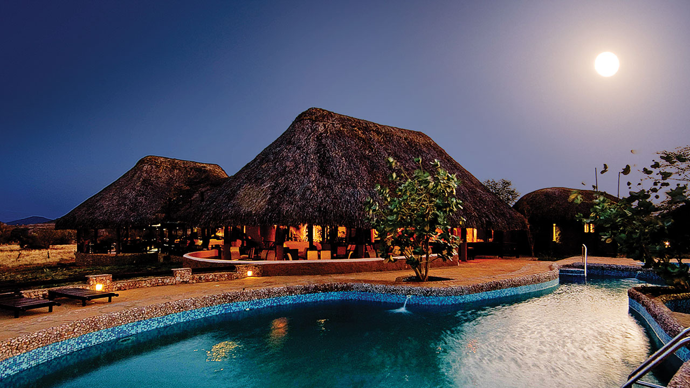

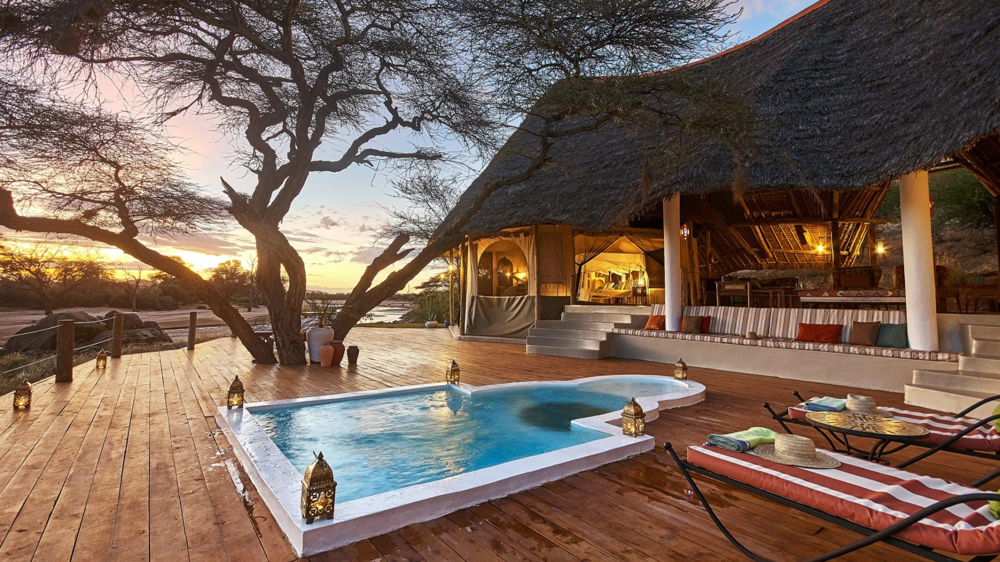
Distance/Time: ~150 km | 3–4 hrs
After breakfast, the road south leads you across the cool highlands toward Ol Pejeta Conservancy a sanctuary where conservation meets luxury. This private reserve shelters East Africa's largest population of black rhinos and the last two remaining northern white rhinos. Your afternoon game drive reveals vast open plains dotted with zebras, buffalo, and elegant antelopes. Visit the Sweetwaters Chimpanzee Sanctuary, where rescued chimps live safely in the only refuge of its kind in Kenya. As evening falls, the sound of the wild lulls you into peace.
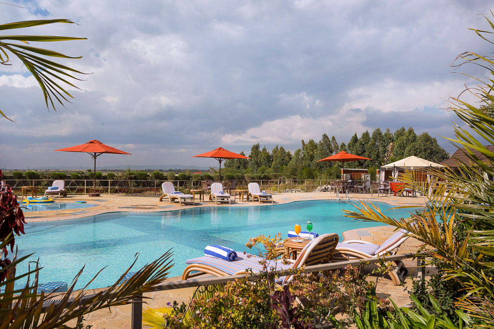

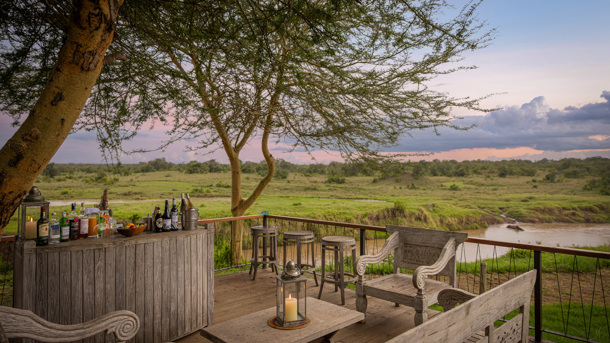
Distance/Time: ~180 km | 4–5 hrs
This morning begins with a sunrise drive through Ol Pejeta, where rhinos graze beside zebra herds as the mist lifts from the plains. The journey continues toward the Great Rift Valley, its escarpments unfolding in sweeping panoramas. By afternoon, you reach Lake Nakuru National Park a paradise of shimmering waters, fever trees, and abundant wildlife. Spot elegant Rothschild giraffes, shy leopards in the acacia groves, and the white rhinos that make Nakuru famous.


Distance/Time: ~240–260 km | 4.5–6 hrs
After breakfast, drive westward through rolling farmlands and Maasai homesteads to the legendary Masai Mara. The scenery transforms from cultivated highlands to endless golden savannah — the stage of the Great Migration and home to Africa's most iconic predators. Arrive by afternoon for your first game drive, when light and life are at their richest. Lions sprawl in the grass, elephants move in family herds, and cheetahs scan the plains from termite mounds.


As dawn brushes the Mara in gold, the savannah stirs to life silhouettes of giraffes drift through the mist while distant roars echo across the plains. After breakfast, set out for a full day of discovery in one of Africa's most iconic landscapes. You may choose two extended game drives one at sunrise, one in the late afternoon or a full-day safari with a picnic lunch beneath a lone acacia tree. The Masai Mara rewards patience and wonder: a cheetah mother teaching her cubs to hunt, elephants fording the Mara River, and if the season allows the thundering drama of the Great Migration, where wildebeest and zebras paint the plains in motion.
Optional dawn balloon safari available.


Flight Time: ~2–3 hrs total
Road Distance/Time: ~467 km | 7 hrs 58 mins
Option 1 – Scenic Flight: After a leisurely breakfast, board a small aircraft for a scenic flight to Amboseli. Soar over the Mara's golden plains, rolling hills, and Maasai homesteads as the landscape unfolds beneath you. Upon arrival, enjoy lunch before an afternoon game drive. The park's legendary elephants roam freely across marshes, giraffes nibble from acacia trees, and flocks of waterbirds shimmer in the sun. All the while, Mount Kilimanjaro rises majestically, its snow-capped peak glowing in late-afternoon light.
Option 2 – Road Transfer: For those who prefer the classic safari journey, depart the Mara early and enjoy a scenic drive south through the Kenyan highlands. Stop at panoramic viewpoints and charming villages along the way. Arrive in Amboseli by afternoon in time for a game drive that reveals the park's iconic wildlife against the dramatic backdrop of Kilimanjaro. The road option offers an intimate connection to the countryside, with endless opportunities to spot wildlife along the route.
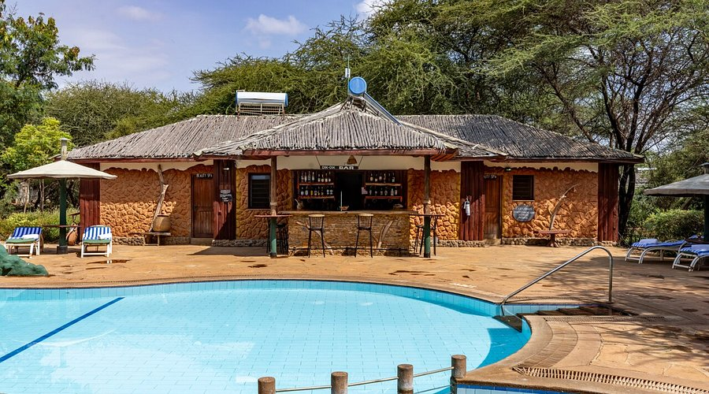
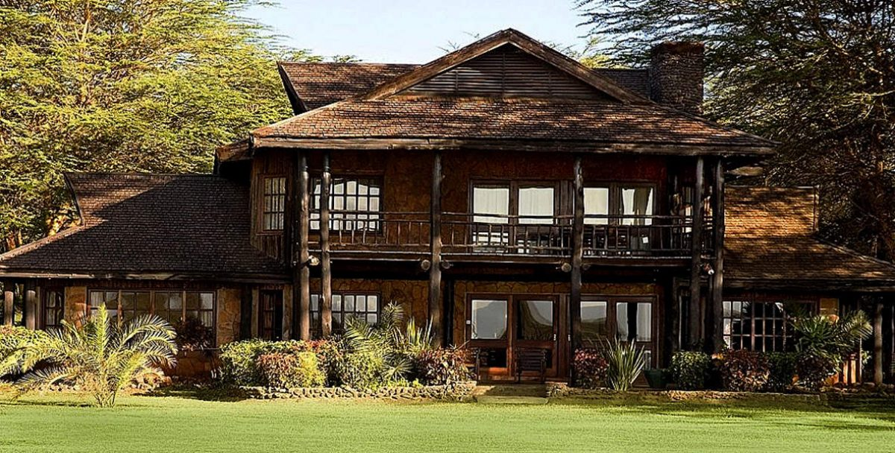
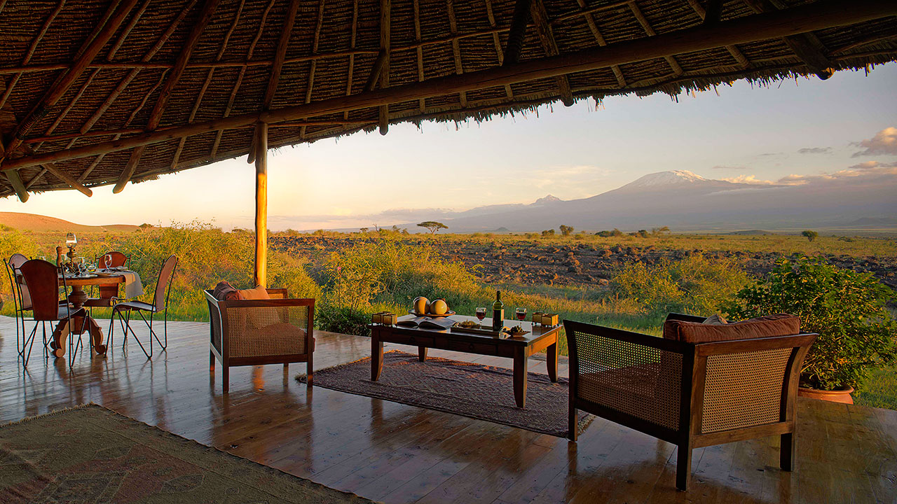
At dawn, the peak of Kilimanjaro glows softly above the clouds. Begin your morning game drive when the light is at its best, capturing elephants moving in the mist and flamingos skimming the lakes. Visit Observation Hill for a panoramic view of Amboseli's wetlands and plains, then enjoy a tranquil afternoon drive among giraffes and gazelles. As twilight deepens, toast your final night in the wild with a sundowner beneath the mountain's gaze.


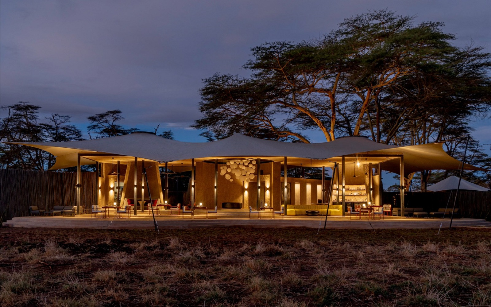
Distance/Time: ~220 km | 4–5 hrs
After breakfast, enjoy a final, unhurried game drive before leaving Amboseli. The road to Nairobi winds through charming countryside and local towns, a gentle transition from wilderness to city life. Your safari ends with hearts full and cameras full a story written in dust, sunsets, and laughter under African skies.
Return to Nairobi by road for onward flight or drop-off at your preferred hotel.
End of Safari – Asante sana for choosing Kenya!
Experience the wild like never before with our expertly crafted safaris